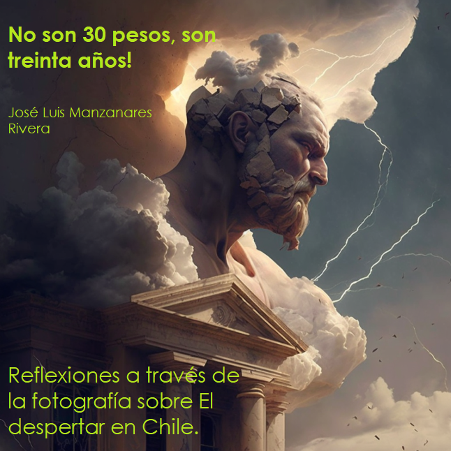

Bienvenidos
Este es el sitio enlinea del libro No son 30 Pesos, son 30 años. Reflexiones a través de la fotografía sobre El despertar en Chile.
Contribuye al proyecto
Si encuentras el libro útil, puedes contribuir:
Compartiéndolo con tu equipo y redes.
Comentando en medios digitales, por ejemplo, a través del hashtag #Chile3030 en Twitter.
Citándolo o enlazándolo.
Disfruta la lectura comprando un ejemplar en: BlackDogPublishing También puedes descargar una copia gratis en formato PDF o epub.

This work is licensed under a Creative Commons Attribution-NonCommercial-NoDerivatives 4.0 International License.